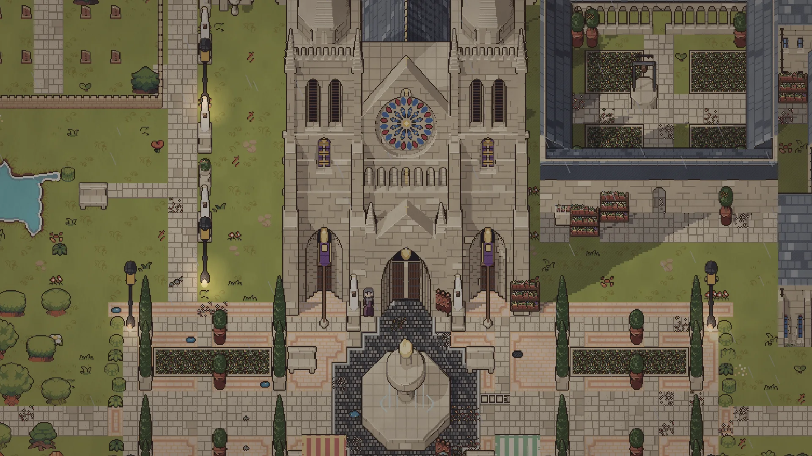
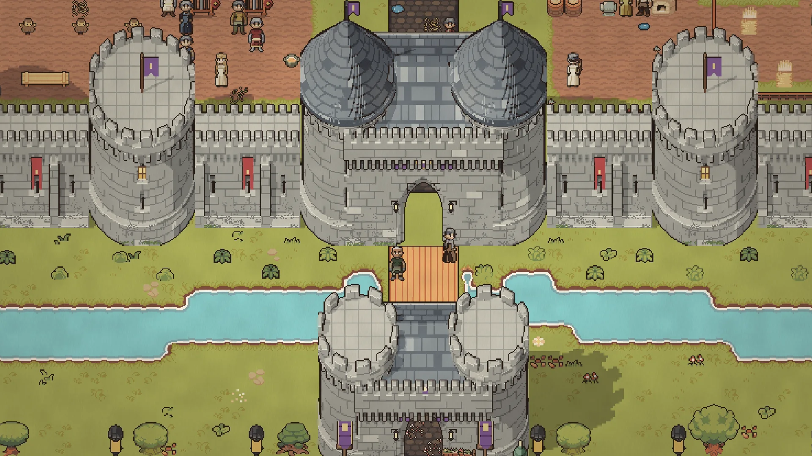
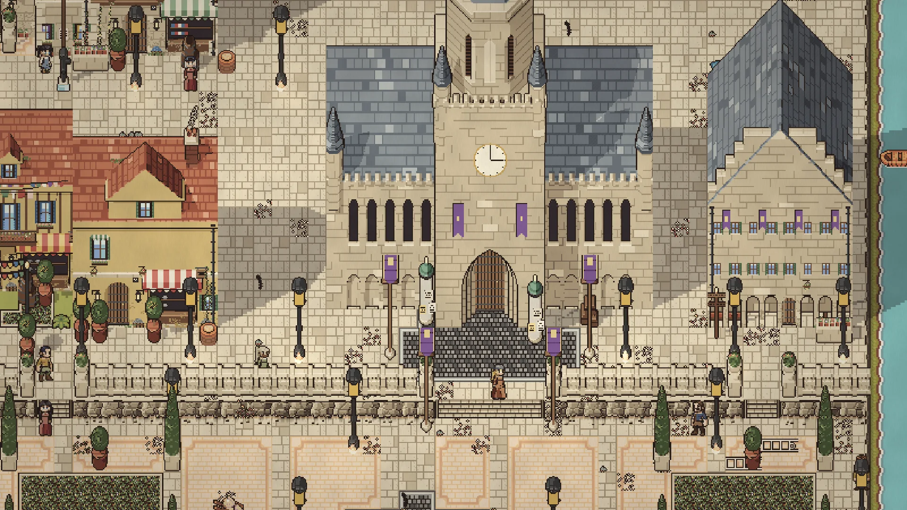
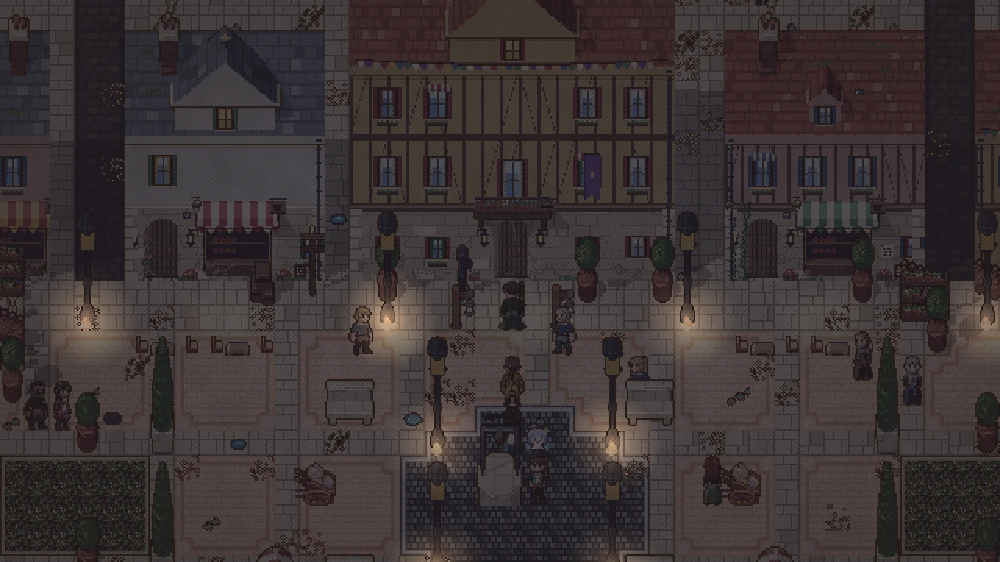
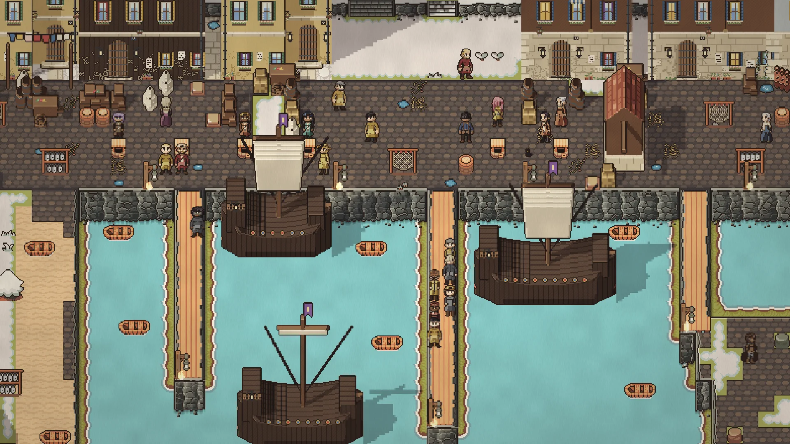
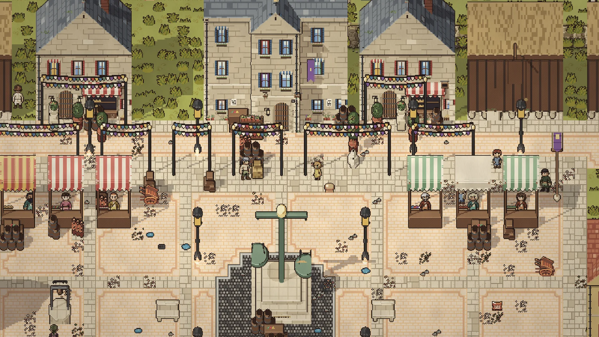
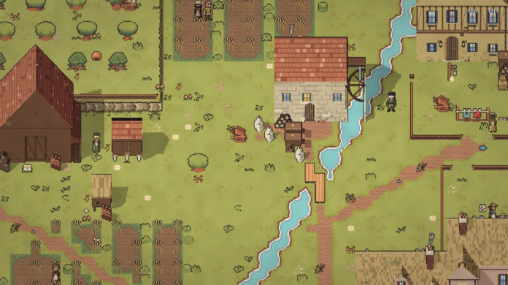
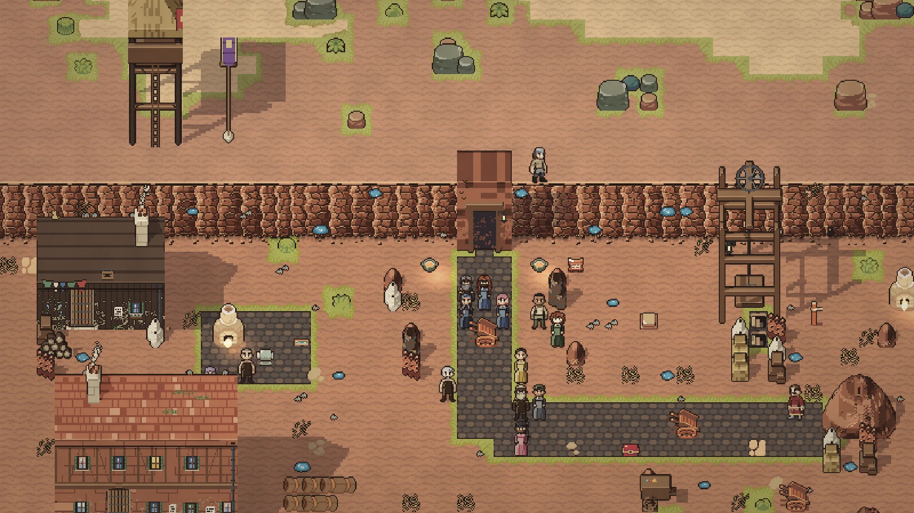
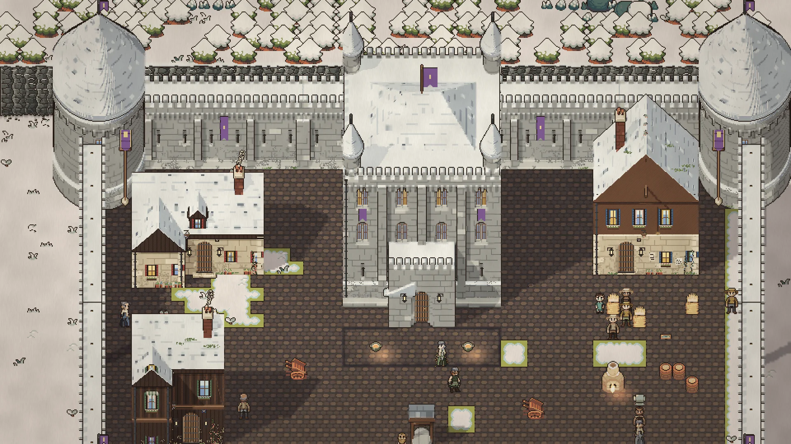

Every building is drawn by the project's own renderer, and every place is laid out on paper first, after the great places it learns from: a Gothic cathedral, a fortress in two rings, a harbour on a fjord, a town on piles. These are the models the rest of the world is built to.
Places
Built by hand, down to the last stone













